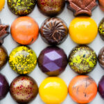
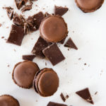
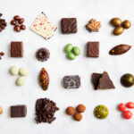
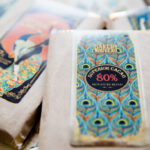
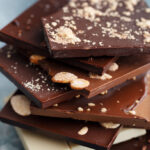

|  |  |  |  |  |
Macarons és sütik |
Finom csokoládé |
Párizsi stílusú macaronsMandula liszt és habcsók sütemények tökéletesre sütve, krémes ganache-val, gazdag vajkrémmel vagy dekadens karamellával töltve. Talán a tökéletes két falat csemege, külön-külön, vagy 6 és 12 darabos díszdobozban kaphatók. Az ízek a hagyományos kedvencektől, például az étcsokoládé ganache-tól és a sózott karamelltól kezdve a kalandosabb, levendulás ganache-ig vagy a fanyar yuzuig terjednek. |
Kézzel készült csokoládéA fényes, színes öntött daraboktól, például a gazdag 70% -os ganache-tól vagy a vásárlóink kedvenc sós karamellájától kezdve a rusztikus burkolatokig, például a mogyorós pralinéig vagy a kókuszos ganache-ig, csokoládéink ugyanolyan szépek, mint finomak. |
Tradiciónális csokoládéVálasszon a régi iskolai kedvencek közül, mint például csokoládé chips, mogyoróvaj vagy snicker-doodles. |
BarsBurokban lévő üzletünkben rotációs választékban kínálunk saját készítésű bárokat, Leaman séf által készített csokoládé felhasználásával! A fajták az étcsokoládé-keverékektől a tökéletes keserűséggel, a klasszikus, tejszínes tejcsokoládéig, valamint olyan keveréktáblákig terjednek, mint a szárak, a praliné vagy a vajas sütik. |
Csomagolt sütikVegyen egy csemegét, hogy megossza egy barátjával! Csomagolt sütik csokoládé vagy vanília omlós tésztát és orosz tea sütiket tartalmaznak. |
BrowniesSűrű, gazdag és finom, pont olyan, amilyennek egy brownie-nak lennie kell. |